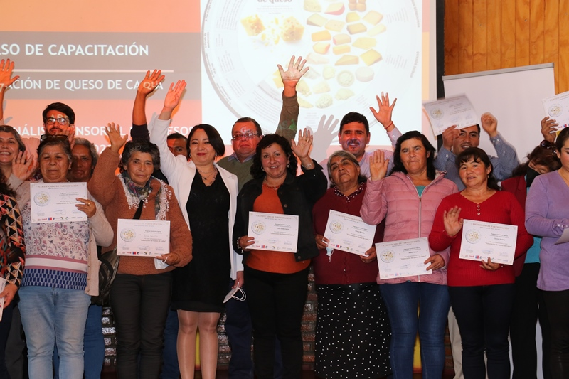

La actividad contó con la entrega de diplomas, un taller de análisis sensorial y una cata de vinos y quesos.

Sesión de prueba sensorial de quesos elaborados por los propios productores de la Región de Coquimbo y la entrega de certificados por parte de las autoridades, fue parte de lo realizado en el cierre del curso «Elaboración de Queso de Cabra», iniciativa impulsada por el Programa Transforma Caprino de Corfo que cuenta con el apoyo del Gobierno Regional, a través del Programa Gestión Territorial para Zonas Rezagadas.
En una actividad realizada en Monte Patria, se dio cierre a un curso de elaboración de quesos que contemplo 5 módulos realizados en dos comunas de nuestra Región, un módulo bajo modalidad online y cuatro de ellos en modalidad presencial, donde participaron emprendedores de Punitaqui, Canela, Combarbalá y Monte Patria. En esta última jornada se abordó la importancia del análisis sensorial, los atributos y tipos de pruebas sensoriales.
Al respecto, la gobernadora regional, Krist Naranjo, explicó que como Gobierno Regional se quiere reforzar la gestión del sector, a través del fortalecimiento y formalización de sus actividades principalmente porque “nuestro mercado regional es muy diverso y que cada territorio tiene su identidad propia. Por lo tanto, este curso le aporta una nueva visión de como poder potenciar su rubro y poder diversificar la oferta que tenemos en nuestra región” esto en atención a su vinculación, por ejemplo, con el turismo como un producto y un proceso identitario de nuestra región.
Dentro de las temáticas del curso, se abordó el aseguramiento de la inocuidad de los alimentos de origen lácteo, la microbiología de la leche para la elaboración de quesos, composición de la leche y estructura, técnicas para evaluar la calidad de la leche y del queso en la lechería y la quesería, técnicas para ajustar la calidad de la materia prima en la elaboración de distintos productos lácteos y fundamentos de los precipitados lácteos, entre otras. Lo que se tradujo en la elaboración de queso fresco con y sin especias, como queso de Pasta Hilada, Halloumi y Camembert como también las técnicas de maduración de queso tradicional.
Claudia Torres, administradora de la Estación Experimental Las Cardas y presidenta del directorio del Programa Transforma Caprino expresó que “actividades como estas permiten que el productor conozca lo que hace y cuando él aprende a conocer su producto puede corregir y también puede dar esa seguridad al consumidor de lo que está comprando”.
Se trata de un programa que viene a cambiar la calidad de vida de nuestros productores crianceros de queso de cabra, porque además viene acompañado, en algunas etapas, con resoluciones sanitarias lo que va a permitir la posibilidad de que el queso de cabra, que es tan de nuestra región, pueda ser comercializado en distintos mercados, abriéndole la posibilidad también de obtener mayores ganancias, añadió el alcalde de Monte Patria, Cristian Herrera.
Sobre lo que está realizando Transforma Caprino
Ingrid Haselbauer, gerente del programa, explicó que están promoviendo fuertemente el negocio caprino de la región para lograr que los productores den un salto cuantitativo, consigan sus resoluciones sanitarias, hagan iniciación de actividades y le den confianza al consumidor. «Lo que queremos es poner los productos caprinos, no sólo el queso de cabra, sino que cárnicos u otros en valor y que sean productos típicos regionales y que la gente los reconozca como tal. Actualmente estamos realizando levantamiento de perfiles para nuevos productos para que ellos puedan innovar”, indicó.